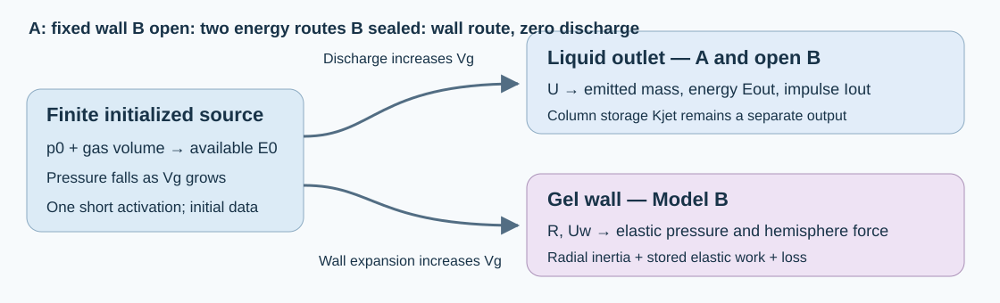
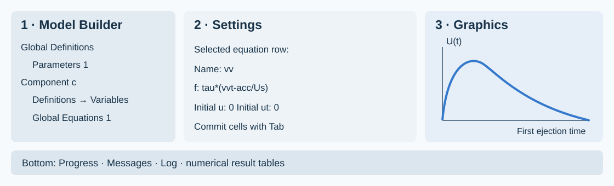

COMSOL 6.4 · From a blank model · 53 numbered steps
Build the two minimal models, step by step
Exact entries, visible checks, saved checkpoints and defined outputs.
0 of 53 steps completed
Keep this guide beside COMSOL and complete one numbered card at a time. The route is a blank 0D model → solved Model A → hydrogel Model B → sealed control → verified output tables. Every card identifies the node, the entry and a check before continuing. The checkpoints are your own practice files.
Model A answers the conditional pressure/jet-speed question for a finite post-activation source and a connected liquid outlet. Model B adds the spherical gel's confinement and calculates how much emitted energy and impulse survives in the same outlet. A single nominal 10 ns laser pulse is represented by initial data after activation and pressure equilibration. Time zero in these studies is that initialized state. There is no subsequent source forcing.
Declared controls. The source is a closed adiabatic ideal gas, with uniform pressure, constant exponent greater than one and finite available work. Carrier density and effective outlet inertance are constant. The outlet is already open; its constant meniscus entry pressure is an approximation. Model B uses an intact, undrained incompressible neo-Hookean gel with Kelvin–Voigt loss, approximated as a spherical medium around the chamber. Initial mechanical velocities are zero; the chamber's reference wall is stress-free; the far-field pressure and outlet exit pressure are ambient. Outward liquid speed and expanding wall speed are positive. Later rebound, phase exchange, gel rupture and target impact are outside this first-ejection calculation. Actual PFC and gel properties require calibration.
The complete foundations, derivations, symbol glossary and validity audit are in MODEL_SPEC.md and the full offline report. This guide translates those equations into concrete COMSOL entries; its expression tables use COMSOL syntax.

A labeled mechanism schematic. Model A keeps the wall fixed. Model B allows the source volume to grow through both outlet discharge and gel-wall expansion. The diagram represents scalar balances, not spatial field maps.
A — Learn the interface and create the practice model
01
Identify the three working areas
Where: COMSOL Desktop.
Do: Identify Model Builder at the left, Settings for the selected node in the middle, and Graphics for plots at the right. Progress, Messages, Log and Results tables normally appear below. A node path such as Global Definitions → Parameters 1 means expand the first node and select its child. A right-click creates a child of the node under the pointer. After editing a table cell, press Tab or click outside the cell to commit the entry.
Check: You can select a node and see its Settings change before entering any equation.

This is an interface schematic, not a screenshot. Positions depend on your window layout; the node and field names are the reference.
02
Open a new model
Where:File → New → Model Wizard.
Do: Open COMSOL Multiphysics 6.4. Choose Model Wizard on the New page. Save any existing work in its own file before switching models. Work inside a new practice/ folder beside this guide; create that folder in the Save As dialog when prompted later.
Check: The wizard displays Select Space Dimension.
03
Select the space dimension
Where:Model Wizard → Select Space Dimension.
Enter: Select 0D.
Check: The wizard advances to Select Physics. The unknowns will be time-dependent scalars. Chamber and outlet radii are parameters in those equations; no geometric sphere or cylinder is needed for this model.
04
Add the scalar equation interface
Where:Select Physics → Mathematics → ODE and DAE Interfaces → Global ODEs and DAEs.
Do: Select Global ODEs and DAEs and click Add. If the list is long, search for that complete interface name. Keep one copy of this interface.
Check: Added physics interfaces contains Global ODEs and DAEs. This interface supplies the Global Equations table used below.
If stuck: Clear the search filter and confirm 0D was selected. The delivered native files record only the base COMSOL license; their gel law is entered as scalar expressions.
05
Add the time study
Where:Model Wizard → Study → General Studies.
Enter: Choose Time Dependent, then click Done.
Check: Model Builder contains a Component, Global ODEs and DAEs, and Study 1 → Step 1: Time Dependent.
06
Set the component namespace
Where: Click Component 1.
Enter: Set Name to c and Label to c: Model A practice. Keep the SI unit system. Name supplies the namespace used in expressions such as c.U; Label changes the visible caption.
Check: The component's Name is c. A label containing the letter c does not by itself change the namespace.
If stuck: If Name remains comp1, correct it now. All result and stop expressions below use the c. prefix. Component Name documentation.
07
Save the first checkpoint
Where:File → Save As.
Enter: Save as practice/A_01_setup.mph. Subsequently use Ctrl+S; save a new checkpoint at the milestones identified below.
Check: The title bar shows your practice filename. The accepted native files in models/ remain available for comparison.
B — Enter every Model A input and expression
08
Enter all 32 parameters
Where:Global Definitions → Parameters 1.
Do: Enter all rows below, or click Load from File under the table and choose A_parameters_import.txt. That import has two tab-separated columns and no header. Import it once into the parameter table. Its descriptions are supplied by the table below. If you type manually, use the exact case of each name and the square brackets around units.
Check: There are 32 parameter names and no duplicate names. Dependencies can be temporarily unresolved while the table is incomplete; finish all rows before assessing the Value column. p0 is absolute pressure and E0 is an expression derived from it.
Name
Expression — enter exactly
Meaning
tauLaser
10[ns]
One optical pulse, replaced by a post-activation initial state; pulse onset is not solved
Rg0
15[um]
Post-activation source radius; not a liquid PFC-droplet radius
Rc0
30[um]
Initially stress-free spherical chamber radius
a
5.0E-6[m]
Radius of the pre-existing liquid outlet
L
50[um]
Effective liquid-column inertance length
Lbudget
(Vc0-Vg0)/A
Connected chamber liquid inventory divided by outlet area; separate from inertance length
rho
1000[kg/m^3]
Stipulated water-like carrier density
rhoG
1000[kg/m^3]
Stipulated undrained gel density
pInf
100[kPa]
Absolute ambient pressure
kap
1.4
Adiabatic ideal-gas control exponent; not a validated PFC-vapor EOS
p0
379631.6312499547[Pa]
Post-activation absolute source pressure, set from available work by the builder
Effective liquid-column inertia mass, not emitted mass
Iscale
mJet*Us
Scaling momentum for the emitted-impulse accumulator
Uceiling
sqrt(2*E0/mJet)
Energy-only peak outlet-speed bound from column inertia; not an achieved velocity
qCeiling
E0/(A*L)
Energy-only liquid dynamic-pressure upper bound
pCap
2*sigma/a
Pinned hemispherical-meniscus resistance
tObs
1[us]
Declared averaging interval for an impulse-only arrest-pressure bound
AObs
A
Declared pressure observer area
09
Check the initialized energy and geometry
Where: Stay in Parameters 1, looking at the Value column.
Check against:
Quantity
Expected value
Initial gas volume Vg0
1.413716694e-14 m³
Initial chamber volume Vc0
1.130973355e-13 m³
Outlet area A
7.853981634e-11 m²
Finite budget Lbudget
1260.000000 µm
Inertance length L
50 µm
Meniscus pressure pCap
28.8 kPa
Time scale tau
3 µs
Initial absolute p0
379.631631 kPa
Available workE0
2 nJ
Column-speed bound Uceiling
31.915382 m/s
Why:L defines liquid inertia. Lbudget defines how much connected liquid can leave; these have different meanings. The 2 nJ value is mechanical availability after activation. It is not incident laser energy. tauLaser=10[ns] records the short-pulse assumption; it is not a time-dependent forcing function and changing it alone will not change this solution.
If stuck: A negative available work or invalid equilibrium volume usually indicates a pressure/unit error. Use the supplied absolute p0; do not replace it with the 279.632 kPa gauge value.
10
Create Variables and enter the source geometry
Where: Right-click Component c → Definitions → Variables.
Do: Set the Label to Source, outlet and accounting. Enter the first seven rows below. For the whole 33-row table, you may instead use Load from File and select A_variables_import.txt; then inspect the three groups in Steps 10–12. Use local names inside this component table, without adding c. to the Name column.
Check: The chamber radius is fixed through R=Rc0; wall speed is exactly 0[m/s]. The gas volume includes discharged liquid volume. qq and vv will become defined when you add the equation rows in Step 14.
Name
Expression — enter exactly
Unit
Meaning
x
Lbudget*qq
m
Discharged liquid volume divided by outlet area, m
U
Us*vv
m/s
Outward liquid-plug speed, m/s
R
Rc0
m
Chamber wall radius, m
Uw
0[m/s]
m/s
Chamber wall expansion speed, m/s
Vg
Vg0+A*x+4*pi*(R^3-Rc0^3)/3
m^3
Finite gas volume including expelled liquid and chamber expansion
Vdot
A*U+4*pi*R^2*Uw
m^3/s
Total source volume rate
pb
p0*(Vg0/Vg)^kap
Pa
Uniform absolute pressure of finite ideal-gas control source
11
Enter the resistance and stored-energy expressions
Where: The same Variables node.
Do: Add the following seven rows if you are entering manually. Model A sets the gel-related terms to dimensioned zero. The loss expression permits later sensitivity controls; the baseline loss inputs are zero.
Check: The column energy Kjet uses effective column inertia. It is distinct from the emitted energy Eout entered next. Meniscus work is the work of the declared constant entry-pressure control; its evolving free surface is not solved.
Name
Expression — enter exactly
Unit
Meaning
pEl
0[Pa]
Pa
Elastic resistance pressure at spherical gel wall
pRes
0[Pa]
Pa
Elastic plus viscous gel wall resistance
Wgel
0[J]
J
Recoverable elastic gel work
Kgel
0[J]
J
Spherical gel radial kinetic energy
Kjet
mJet*U^2/2
J
Stored kinetic energy of effective liquid-column inertia; not emitted energy
Esurf
pCap*A*x
J
Reversible meniscus work during outward motion
ploss
Rloss*U+rho*Kloss*U*abs(U)/2
Pa
Declared dissipative port pressure drop
12
Enter acceleration, emitted output and checks
Where: The same Variables node.
Do: Add the remaining 19 rows. Keep the outgoing kinetic-head term -rho*U^2/2 in acc, and keep Eout in energyResidual. These terms account for energy that actually leaves the outlet. Removing them changes the model.
Check: The completed node has 33 names. Eout, Iout and Mout mean actual emitted energy, axial impulse and liquid mass. Ijet means instantaneous effective column momentum. The communication ratio is a validity diagnostic calculated from scalar rates.
Name
Expression — enter exactly
Unit
Meaning
acc
outletOpen*(pb-pInf-pCap-ploss-rho*U^2/2)/(rho*L)
m/s^2
Outlet acceleration from unsteady Bernoulli with discharged kinetic head
Normalized energy residual including actual outflow
Fconf
pi*R^2*pEl
N
Axial resultant on one gel hemisphere, not a net force on the whole sphere
qJet
rho*U^2/2
Pa
Liquid-plug dynamic-pressure scale, not an impact pressure
Ijet
mJet*U
N*s
Effective column momentum; actual discharged impulse is Iout
Fflux
rho*A*U^2
N
Momentum-flux scale, not a resolved unsteady target force
pArrestBound
Iout/(AObs*tObs)
Pa
Mean arrest-pressure upper bound from emitted impulse on the declared observer
stroke
x/Lbudget
1
Fraction of the finite discharge-volume budget
stretch
R/Rc0
1
Gel inner-wall circumferential stretch
Mjet
abs(U)/cL
1
Liquid-speed Mach diagnostic
Mwall
abs(Uw)/cL
1
Wall-speed Mach diagnostic
communication
L/cL*kap*abs(Vdot)/Vg
1
Pressure-change communication ratio; no propagation field is solved
13
Set the equation quantities
Where:Component c → Global ODEs and DAEs → Global Equations 1.
Enter: Keep the equation group name ODE1. Set Dependent variable quantity to Dimensionless (1) and Source term quantity to Dimensionless (1). Delete the default placeholder equation row before entering your five rows.
Check: Both quantities are dimensionless. The factor tau in each equation converts a rate into a dimensionless residual.
State meanings before the equation entries:qq=x/Lbudget; vv=U/Us; dd=Edis/E0; ee=Eout/E0; ii=Iout/Iscale. These are the five solved scalars. The Variables node supplies algebraic expressions, not additional independent unknowns.
14
Enter all five Global Equations rows
Where: The Global Equations table from Step 13.
Do: Enter every row below, including both initial-value columns. The table's equation field f(u,ut,utt,t) is a residual that COMSOL sets to zero. For a long row, select it and edit its fields below the table. A_equations.tsv is a headed copy/paste reference; the parameter/variable Load from File buttons do not import it into this equation table.
Check: The only names are qq, vv, dd, ee, ii. Their initial values are all zero. The row for ii integrates momentum flux, rather than assigning mJet*U to emitted impulse.
Name
f(u,ut,utt,t) — enter exactly
u_0
ut_0
qq
tau*(qqt-outletOpen*U/Lbudget)
0
0
vv
tau*(vvt-acc/Us)
0
0
dd
tau*(ddt-Pdis/E0)
0
0
ee
tau*(eet-Pout/E0)
0
0
ii
tau*(iit-outletOpen*rho*A*U^2/Iscale)
0
0
15
Check derivative spelling and initial conditions
Where: The five equation rows and the Variables node.
Do: Inspect qqt, vvt, ddt, eet, iit. They are COMSOL's first-time-derivative names: vvt is the derivative of vv. Do not type vv*t, which is multiplication. Initial value ut_0=0 is retained from the accepted setup; the first-order equations calculate the evolving derivatives.
Check: Zero initial speed does not mean zero initial acceleration. With the baseline pressure, acc starts positive. The source, volume and output expressions should now resolve through the five declared states. Global Equations documentation.
16
Enter the output time list
Where:Study 1 → Step 1: Time Dependent.
Enter: Keep Time unit s and replace Output times with:
range(0,1[ns],100[us])
Check: The requested list begins at zero and ends at 100 µs, with 1 ns output spacing. The stop conditions will terminate the first episode earlier. This list is numerical sampling, not the 10 ns optical pulse.
17
Reveal the time solver
Where: Right-click Study 1 → Show Default Solver.
Do: Expand Solver Configurations → Solution 1 and click Time-Dependent Solver 1. If these nodes are already present, expand them directly. Keep the generated Dependent Variables node; it connects the ODE1 equation group to the solver.
Check: Time-Dependent Solver 1 is visible and selected in Settings. You have not added a second study or a second physics interface.
18
Match the accepted solver settings
Where:Solution 1 → Time-Dependent Solver 1.
Enter: Use the following General, Absolute Tolerance and Time Stepping settings. If General inherits from the study, choose User defined in Defined by study step. The solver's time list must match Step 16.
Section / field
Set to
General → Defined by study step
User defined
General → Output times
range(0,1[ns],100[us])
General → Relative tolerance
1e-9
Absolute Tolerance → Global method
Scaled
Absolute Tolerance → Tolerance method
Factor
Absolute Tolerance → Tolerance factor
0.1
Absolute Tolerance → variable Method
Use global
Time Stepping → Solver type
Implicit
Time Stepping → Method
BDF
Time Stepping → Steps taken by solver
Strict
Time Stepping → Algebraic Variable Settings → Consistent initialization
Off
Check: BDF, Strict, 1e-9 and initialization Off are visible. Keep automatically selected initial steps, BDF orders and variable scaling. These are first-order ODEs; turning initialization Off preserves the prescribed zero velocities. Strict stepping reaches the listed times and can take extra internal steps when needed. Time solver documentation.
Do: Add the four rows below. In every row, set Stop if to Negative (<0) and select Active. Under Output at Stop, keep Add solution = No, matching the accepted files. Add warning can remain enabled.
Check: Four active rows are present. Component expressions have the c. prefix because this solver node is outside the component namespace.
Stop expression
Stop if
Active
Description
if(outletOpen>0.5,c.U,c.Uw)
Negative (<0)
Yes
First outward ejection ends, or first sealed wall turning point
Why: The first row stops after the first outward speed returns through zero. In a sealed case it instead checks wall speed. The other rows enforce liquid inventory, a declared stretch screen and a Mach screen. The initial zero speed is not negative, so the baseline can start. The communication screen is checked after solving in Step 28; it is not an online stop row. Stop Condition documentation.
20
Make the before-solve check
Where: Parameters, Variables, Global Equations, Time-Dependent study and its solver.
Check each item: 32 parameters; 33 variables; 5 equation rows; both equation quantities Dimensionless; all initial states zero; study and solver both use the 1 ns list; BDF Strict; consistent initialization Off; four active Negative stop rules. Initial Values of Variables Solved For must come from the physics initial values, not a previous nonzero solution.
Do: Save a checkpoint practice/A_02_ready_to_solve.mph. If an unknown-variable message names comp1 or c, correct the namespace; if it names qq or vv, inspect the equation Name column.
21
Compute the first ejection
Where:Study 1 toolbar, or right-click Study 1 → Compute.
Do: Click Compute. Watch Progress and Log. Let the solve finish before opening a result table. A warning stating that a stop condition was fulfilled is expected when its description matches one of the declared rules.
Check: The stored episode ends around 33.885 µs, before the requested 100 µs. The baseline emits outward, reaches a speed maximum and returns toward zero. Read the first causal error if a solve fails; do not continue to plot an old solution.
C — Plot, evaluate and answer Model A's question
22
Plot outlet velocity
Where: Right-click Results → 1D Plot Group; right-click the new group → Global.
Enter: Label the group A outlet speed. Choose the dataset for Study 1 / Solution 1. In Global's y-Axis Data table enter c.U, Unit m/s, Description Outward outlet speed. In x-Axis Data use Time as the axis source; select us as the time unit if available. Otherwise keep seconds and read the axis accordingly. Click Plot.
Check: Speed begins at zero, peaks near 15.3761 m/s, then decays toward zero. Do not use Surface or Volume plots for these scalar data.
23
Plot the distinct pressure outputs
Where: Add another 1D Plot Group → Global.
Enter: Label it A pressure definitions. Use the same dataset and time axis; enter:
Expression
Unit
Description
c.pb-pInf
kPa
Chamber source overpressure
c.qJet
kPa
Outlet dynamic-pressure scale
pInf
kPa
Ambient absolute pressure reference
Check: Initial source overpressure is about 279.632 kPa; maximum outlet dynamic pressure is about 118.212 kPa. Absolute chamber pressure would be c.pb, including ambient. Dynamic pressure is an outlet kinetic-energy scale and does not calculate a target impact peak.
24
Plot energy accounting
Where: Add another 1D Plot Group → Global, label A energy accounting.
Enter: Plot the following dimensionless quantities against time, with Unit 1:
Expression
Meaning
c.Kjet/E0
Energy stored in effective liquid-column motion
c.Eout/E0
Energy actually emitted in liquid discharge
c.Esurf/E0
Work of the constant meniscus-load control
c.Edis/E0
Accumulated irreversible loss
c.energyResidual
Normalized first-law residual
Check:Eout increases over the outward episode, while stored column energy rises and falls. Near the end, low Kjet can coexist with substantial emitted energy. The residual stays near zero. Remaining source availability explains energy not yet allocated to these four destinations.
25
Create the complete history table
Where: Right-click Results → Derived Values → Global Evaluation.
Enter: Label the node A complete first-ejection history. Select the Study 1 solution dataset and Time selection = All. Leave Data Series Operation → Transformation = None. Enter the complete expression table below and click Evaluate. global_evaluation.tsv is a headed copy/paste reference.
Check: You obtain multiple time rows covering the solved episode, rather than one maximum or an assumed 100 µs endpoint. The emitted-output columns are included separately from stored column energy/momentum.
Expression
Unit
Description
t
s
Time after initialization
c.x
m
Discharged volume / outlet area
c.U
m/s
Outward outlet speed
c.R
m
Chamber wall radius
c.Uw
m/s
Wall expansion speed
c.Vg
m^3
Gas source volume
c.pb-pInf
Pa
Source gauge pressure
c.pEl
Pa
Elastic gel pressure
c.pRes
Pa
Elastic plus viscous gel resistance
c.Fconf
N
Elastic hemisphere force
c.qJet
Pa
Outlet dynamic-pressure scale
c.Ijet
N*s
Effective column momentum
c.Fflux
N
Momentum-flux scale
c.Kjet
J
Stored column kinetic energy
c.Kgel
J
Gel radial kinetic energy
c.Wgel
J
Gel elastic work
c.Esurf
J
Constant meniscus-load work
c.Edis
J
Irreversible loss
c.energyResidual
1
Normalized energy residual
c.stroke
1
Liquid budget fraction
c.stretch
1
Inner wall stretch
c.Mjet
1
Liquid Mach diagnostic
c.Mwall
1
Wall Mach diagnostic
c.communication
1
Pressure communication screen
c.acc
m/s^2
Outlet acceleration
c.wallAcc
m/s^2
Wall acceleration
c.pArrestBound
Pa
Declared mean arrest-pressure bound
c.Eout
J
Actually emitted kinetic energy
c.Iout
N*s
Actually emitted axial impulse
c.Mout
kg
Actually emitted liquid mass
26
Evaluate temporal maxima correctly
Where: Add a separate Derived Values → Global Evaluation node.
Enter: Label it A temporal maxima. Dataset = Study 1 solution; Time selection = All; Data Series Operation → Transformation = Maximum. Enter the expressions below and Evaluate. If Data Series Operation is collapsed, expand it.
Expression
Unit
Baseline target
c.U
m/s
about 15.37608
c.pb-pInf
kPa
about 279.63163
c.qJet
kPa
about 118.2119
abs(c.energyResidual)
1
below 1e-6
c.communication
1
below 0.1
c.stroke
1
at most 1, up to numerical tolerance
Check: These are maxima over time for each listed scalar, not spatial maxima. The time of maximum source pressure need not equal the time of maximum speed.
27
Evaluate the actual endpoint outputs
Where: Add another Global Evaluation, label A endpoint output.
Enter: Dataset = Study 1 solution; Time selection = Last; Transformation = None. Enter t, c.Eout, c.Iout, c.Mout, c.x, c.U, and c.energyResidual, using the units in the table below.
Expression
Unit
Accepted last stored value
t
us
33.8850
c.Eout
nJ
1.391345448
c.Iout
N*s
2.270809686e-10
c.Mout
ng
20.9678882
c.x
um
266.9714446
c.U
m/s
0.0001702102
c.energyResidual
1
-1.0350e-10
Check: Last means the last stored time in this stopped solution, about 33.885 µs. It does not mean the nominal 100 µs final time. Stop Condition checks discrete solver steps; the exact zero-crossing time differs slightly from the final stored row. Use this same endpoint convention for emitted-output comparisons.
28
Accept and save the baseline
Where: The plots, maxima and endpoint tables you just created.
Do: Check zero initial liquid/wall velocities, positive gas volume/absolute pressure, outward speed throughout the reported episode, normalized residual below 1e-6, communication below 0.1, both Mach diagnostics below 0.1, and stroke no greater than the finite liquid budget. Inspect the stop description. Then save practice/A_baseline_my_rebuild.mph.
Check: The baseline peak agrees with 15.37608 m/s and endpoint emitted energy with about 1.391345 nJ. These check implementation of the stated controls. They do not calibrate the PFCEOS or laser conversion.
29
Select source work through absolute pressure
Where:Global Definitions → Parameters 1.
Do: For the sampled source-work levels, use the absolute pressures below. They were obtained by inverting the finite adiabatic available-work relation at the same Rg0, kap and pInf. Edit p0; leave the E0 expression in place. Keep all other inputs fixed for the source-work comparison.
Available work
Absolute p0 — enter exactly
0.5 nJ
220113.1907789512[Pa]
2 nJ
379631.6312499268[Pa]
5 nJ
612212.3087264621[Pa]
Check: The Value column for E0 evaluates to the intended available work. If you change source radius, ambient pressure or exponent, recalculate this map using Step 2 of MODEL_SPEC.md or source_pressure in reference.py. This particular three-pressure table then no longer applies.
30
Reproduce the nine-case conditional envelope
Where: Parameters, Study 1 Compute, and A temporal maxima.
Do: Perform each row of the following trial table: set p0 and a; commit both cells; verify E0; recompute Study 1 from its initial values; Evaluate the maxima and endpoint nodes on the newly computed dataset; record peak speed, both defined pressures, emitted energy/impulse, and the validity diagnostics. Save each trial under its own practice filename if you want to preserve that solution. Repeat this entire sequence for every row.
Case
E0 (nJ)
p0
a
Expected peak U (m/s)
A_E0.5nJ_a3um
0.5
220113.1907789512[Pa]
3[um]
8.560117
A_E0.5nJ_a5um
0.5
220113.1907789512[Pa]
5[um]
8.068346
A_E0.5nJ_a10um
0.5
220113.1907789512[Pa]
10[um]
5.860144
A_E2nJ_a3um
2
379631.6312499268[Pa]
3[um]
17.286430
A_E2nJ_a5um
2
379631.6312499268[Pa]
5[um]
15.376078
A_E2nJ_a10um
2
379631.6312499268[Pa]
10[um]
11.237538
A_E5nJ_a3um
5
612212.3087264621[Pa]
3[um]
25.279819
A_E5nJ_a5um
5
612212.3087264621[Pa]
5[um]
22.350558
A_E5nJ_a10um
5
612212.3087264621[Pa]
10[um]
16.601975
Check: The largest sampled speed is about 25.27982 m/s at 5 nJ and a 3 µm outlet. Its source overpressure is about 512.212 kPa and dynamic-pressure scale about 319.535 kPa. The maximum is conditional on the declared family; raising available work or changing architecture changes the family.
31
Interpret the pressure and speed limits
Where: Parameter values Uceiling, qCeiling, and the nine-case results.
Do: Compare solved maximum speed with Uceiling, and solved dynamic pressure with qCeiling, case by case. These bounds allocate all available work to column motion and are consequently larger than the achieved peaks. Use the included conditional envelope figure for the accepted comparison.
Check: At the baseline the energy-only speed bound is about 31.9154 m/s, while solved speed is 15.3761 m/s. Record chamber pressure, outlet dynamic pressure and the energy-only bound in separate columns. The excluded activation transient and target impact have no pressure prediction in these models.
D — Add hydrogelconfinement to obtain Model B
32
Return to the baseline and save a Model B copy
Where:File → Open, then File → Save As.
Do: Open your saved A_baseline_my_rebuild.mph from Step 28. Save a separate copy as practice/B_01_from_A.mph. Change the component Label to c: Model B practice; keep its Name c.
Check: You are editing the Model B practice copy. p0=379631.6312499547[Pa], a=5[um] or its equivalent in metres, G=20[kPa], etaG=0.010[Pa*s], rhoG=1000[kg/m^3], Kloss=0, Rloss=0[Pa*s/m], outletOpen=1. These are the matched baseline inputs. B_parameters_import.txt contains the full baseline table if you are building B in a separate blank model.
33
Replace the nine gel-dependent expressions
Where:Component c → Definitions → Source, outlet and accounting.
Do: Replace the nine existing rows below. Keep the other 24 expressions from Model A. You may use B_variables_patch_import.txt to update these names, or edit their Expression cells manually. B_variables_import.txt contains all 33 B rows for a fresh Variables table.
Check: Gas volume now depends on both expelled liquid and expanding wall radius. pEl, Wgel, Kgel and gel loss are active. rr and ww become defined in the next card.
Pressure-change communication ratio; no propagation field is solved
34
Enter the seven Model B equation rows
Where: The existing Global Equations 1 table.
Do: Replace the five-row table with the complete seven-row table below; retain Dimensionless for both quantities. rr=R/Rc0 is wall-radius ratio and ww=Uw/Us is normalized wall speed. All other state meanings remain those in Step 13. Set rr's initial value to 1. Initial values of the other six states, and every ut_0 entry, are zero. B_equations.tsv is the headed copy/paste reference.
Check: Names are qq, vv, rr, ww, dd, ee, ii. There are seven rows. A zero initial rr would give a zero-radius singularity and is incorrect.
Name
f(u,ut,utt,t) — enter exactly
u_0
ut_0
qq
tau*(qqt-outletOpen*U/Lbudget)
0
0
vv
tau*(vvt-acc/Us)
0
0
rr
tau*(rrt-Uw/Rc0)
1
0
ww
tau*(wwt-wallAcc/Us)
0
0
dd
tau*(ddt-Pdis/E0)
0
0
ee
tau*(eet-Pout/E0)
0
0
ii
tau*(iit-outletOpen*rho*A*U^2/Iscale)
0
0
35
Recheck the inherited study and solver
Where:Study 1 → Time Dependent, then Solution 1 → Time-Dependent Solver 1.
Do: Keep the 1 ns output list in both nodes; match all fields from Step 18. Initial states must come from the updated physics table. The existing ODE1 equation group now contains seven states; do not manually select the old final A solution as the new initial state.
Check: The solver has one active Global ODEs and DAEs interface. Consistent initialization remains Off. If you regenerate the default solver after editing the physics, re-enter Step 18 and recreate Step 19's four stopping rules before computing.
36
Check the Model B stopping logic
Where: The inherited Time-Dependent Solver 1 → Stop Condition.
Do: Compare all four rows with Step 19. Keep each Active and Negative. The first expression must still be if(outletOpen>0.5,c.U,c.Uw).
Check: Open B ends at the first outlet-speed return, while sealed B ends at the first wall-speed return. The 20% stretch rule is a declared screen, not a measured gel-fracture threshold. Stop warnings identify which episode was retained.
37
Compute the open-gel baseline
Where:Study 1 → Compute.
Do: Save practice/B_02_ready_to_solve.mph, then Compute with outletOpen=1. After completion, reselect the current Study 1 dataset in inherited plots and evaluation nodes as needed. Relabel those nodes with B so you can distinguish their results from the saved A practice file.
Check: Peak outlet speed is about 1.62538 m/s and the retained outward episode ends around 1.937 µs. These differ from A because wall expansion and gel loss provide additional destinations for source work.
38
Plot wall motion and gel resistance
Where: Add Results → 1D Plot Group → Global nodes.
Enter: In one group plot c.stretch with Unit 1, and in another group plot c.Uw with Unit m/s. In a pressure group plot c.pEl, c.pRes, c.pb-pInf and c.qJet, all in kPa. Use the current B dataset and Time x-axis.
Check: Initial stretch is 1 and initial wall speed is zero. pEl is elastic resistance; pRes adds viscous resistance. The chamber driving pressure also supplies wall inertia, so it is not interchangeable with either resistance curve. Maximum baseline elastic resistance is about 9.143 kPa.
39
Plot the defined confinement force
Where: Add another 1D Plot Group → Global, label B hemisphere resistance.
Enter: Plot c.Fconf with Unit uN. Its definition is the axial resultant of elastic wall traction on one hemisphere. Optionally add pi*c.R^2*c.pRes, also in uN, labeled Elastic plus viscous hemisphere resistance.
Check: Maximum elastic force is about 33.77 µN. This is a defined hemisphere resultant. Spherically symmetric wall traction has zero net vector force on the complete sphere; this number is not a measured target force or a resolved planar-layer force.
40
Evaluate Model B maxima
Where: Duplicate or create a Global Evaluation node; label B temporal maxima.
Enter: Current B dataset; Time selection All; Transformation Maximum. Evaluate c.U in m/s, c.qJet and c.pEl in kPa, c.Fconf in uN, c.stretch, c.communication, both Mach diagnostics and abs(c.energyResidual) in 1.
Check: Each maximum belongs to its own time history. Do not calculate confinement force by multiplying the maximum pressure by the initial area if the wall radius changed; evaluate the full Fconf expression. The validity checks remain part of accepting the output.
41
Evaluate Model B emitted output
Where:Global Evaluation, label B endpoint output.
Enter: Current B dataset; Time selection Last; Transformation None. Use the same endpoint expression list as Step 27.
Expression
Unit
Accepted last stored value
t
us
1.9370
c.Eout
nJ
0.000136295
c.Iout
N*s
1.982567108e-13
c.Mout
ng
0.1561203
c.x
um
1.9877850
c.U
m/s
0.0007545839
c.energyResidual
1
-1.2237e-07
Check: The very small emitted energy reflects the complete, short B discharge episode. Kjet is not a substitute for that emitted energy; Ijet is not a substitute for emitted impulse. A speed peak alone cannot supply the integrated output.
42
Calculate matched transmission ratios
Where: Two additional Global Evaluation nodes in your B model.
Do: First retain the matching A peak and endpoint values from Steps 26–27. For this baseline, the expressions below use those accepted A values as explicit denominators. If you change source state or geometry, replace every denominator with the corresponding value from your newly matched A control.
Expression (Unit 1)
Time selection → Transformation
Meaning
c.U/(15.376077990105143[m/s])
All → Maximum
Peak-speed ratio
c.qJet/(118211.88717889792[Pa])
All → Maximum
Peak dynamic-pressure ratio
c.Eout/(1.3913454479823484e-09[J])
Last → None
Emitted-energy ratio
c.Iout/(2.2708096862657052e-10[N*s])
Last → None
Emitted-impulse ratio
Check: Use All times + Maximum for peak-speed/dynamic-pressure ratios, and Last + None for emitted-energy/impulse ratios. Multiply a dimensionless ratio by 100 to report percent. Expected baseline results are about 10.5709% speed, 1.1174% dynamic pressure, 0.00980% emitted energy, and 0.08731% emitted impulse. Only the dynamic-pressure ratio equals speed ratio squared at matched density. The episode-integrated energy and impulse ratios depend on the full discharge histories.
43
Solve the sealed hydrogel control
Where: Parameters, then Study 1 Compute.
Do: Save the open baseline as practice/B_open_baseline_my_rebuild.mph. Save a separate copy practice/B_sealed_control_my_rebuild.mph. Change only outletOpen to 0, then recompute from the physics initial values. Leave the first stop expression's conditional switch intact.
Check:U, x, Mout, Eout and Iout remain zero throughout. The wall can move and the gas pressure can change. The sealed control's maximum elastic pressure is about 9.6259 kPa, maximum stretch about 1.15252, and endpoint about 2.452 µs. A sealed wall response is not an external liquid jet.
44
Run the gel and loss sensitivity controls
Where: Reopen B_open_baseline_my_rebuild.mph; edit Parameters and Compute for each trial.
Do: Use the seven-case table below. For each row, restore the other baseline values, commit the changed cells, recompute from the same initial state and Evaluate the same maxima/endpoint/screen nodes. Save outputs under distinct practice names. You may use the accepted native case register to compare the complete outputs.
Case
G
etaG
Kloss
outletOpen
Expected peak U (m/s)
B_open_baseline
20[kPa]
0.01[Pa*s]
0.0
1
1.625385
B_sealed_control
20[kPa]
0.01[Pa*s]
0.0
0
0.000000
B_open_loss_K1
20[kPa]
0.01[Pa*s]
1
1
1.615803
B_open_G5kPa
5[kPa]
0.01[Pa*s]
0.0
1
1.624346
B_open_G100kPa
100[kPa]
0.01[Pa*s]
0.0
1
1.631024
B_open_eta0
20[kPa]
0[Pa*s]
0.0
1
1.619889
B_open_eta0p1
20[kPa]
0.1[Pa*s]
0.0
1
1.677217
Check: Every trial remains a first-event result. A different modulus or viscosity can change both the peak and discharge duration; inspect energy allocation and stopping reason before describing its effect. Do not assume that one stiffness trend proves a universal transmission law.
E — Verify, export and preserve the results
45
Perform the 2 ns / 1 ns resolution check
Where: Time Dependent study and Time-Dependent Solver 1.
Do: On a baseline copy, set both lists to range(0,2[ns],100[us]); Compute and record peak U, last Eout and last Iout. Change both lists back to range(0,1[ns],100[us]); Compute and record them again. Keep tolerances, inputs and stopping rules fixed. Compare relative changes using the 1 ns value as denominator.
Check: Accepted peak-speed changes are about 1.4e-8 relative for A and 9.5e-7 for open B. A baseline rebuild should show peak change below 1e-4. Endpoint quantities can vary with the discrete stop time; inspect those changes as well. Retain the final 1 ns baseline. Changing only a plot's interpolation is not a solver-resolution test.
46
Apply the full acceptance checklist
Where: Global Evaluation of All times with Maximum or Minimum, and the endpoint table.
Do: Check the following conditions individually. If a physical screen fails, record the failed regime rather than reporting that output as an accepted prediction.
Check
Expression / method
Acceptance for these controls
Initial values
First stored row
U and Uw zero; B stretch 1
First law
Maximum abs(c.energyResidual)
below 1e-6
Gas volume and absolute pressure
Minimum c.Vg, minimum c.pb
both positive
Finite liquid inventory
Maximum c.stroke
no greater than 1, within numerical tolerance
Wall stretch
Maximum c.stretch
no greater than the declared 1.2 screen
Liquid/wall Mach
Maximum of c.Mjet, c.Mwall
below 0.1
Uniform-pressure regime
Maximum c.communication
below 0.1
Outward episode
Inspect U and stop description
no later rebound included
Finite output
Last Eout, Iout and Mout
nonnegative; sealed outputs zero
Implementation agreement
Compare declared inputs and output tables
agrees with accepted case and numerical audit
Check: The supplied 17-case NUMERICAL_AUDIT.json has largest normalized first-law residual about 1.26e-7 and largest normalized native/reference waveform discrepancy about 1.15e-4. These are implementation checks; material/phase calibration is separate.
47
Export complete histories and reduced tables
Where: The Results table produced by each Global Evaluation.
Do: Evaluate the full-history node with All times and Transformation None. In the resulting table's toolbar use Save/Export to save a CSV under practice/, for example A_baseline_GUI_history.csv or B_open_GUI_history.csv. Export maxima and endpoint tables separately so their meanings remain distinct. Include units in the table descriptions or retain COMSOL's unit-bearing header.
Check: The history CSV has many time rows and contains emitted energy, impulse and mass. A maxima CSV is not a time history. Confirm that the endpoint CSV reports the actual stopped time. Native and independent comparison CSVs are already included under data/.
48
Save the final practice copies
Where:File → Save As.
Do: Retain A baseline, B open baseline and B sealed control as separately named practice MPH files. Store each solved case with its matching input values and tables. Return to the open baseline after a sensitivity trial if you want that to be the main B practice file.
Check: Reopen each practice file and verify the title, input values and stored plotted data. Both saved baselines use 1 ns output. Your own practice files are in practice/; the delivery ZIP excludes that folder.
49
Inspect the delivered native models
Where:File → Open, selecting either native file in models/.
Do: Inspect Parameters 1, the component's Variables node, Global Equations 1, Time-Dependent Solver 1, its Stop Condition, and the saved result plots/table. The interface labels in the delivered files describe the retained motion/accounting states; they may differ from the wizard's default caption. Use Global Equations 1 to identify the interface.
Check: A has five state rows and B seven. Both have 32 parameters, 33 variables, a single Global Equations interface and stored solutions. The accepted baseline files were reloaded in a fresh COMSOL process and from an extracted package; numerical and portability evidence are linked in the report.
50
Use the reproducible script route when needed
Where: Windows PowerShell in a separate working copy of this entire self-contained folder.
Run-Rebuild.ps1 constructs the 17-case family and writes its native files and histories. Run-Verify.ps1 performs fresh-process and 2 ns / 1 ns checks and saves the refined baselines. The Python reference independently integrates the dimensional equations. Rebuild in a working copy because these commands replace its generated models/data. Use -ComsolBin on the PowerShell runners if COMSOL is installed elsewhere.
Check: Native batch logs must show completed runs and no internal Java error; checking shell exit code alone is insufficient. Solver error details are under build/. This route reproduces the same equations as the GUI tables.
F — Fix common errors and report the correct claim
51
Diagnose the first failure
Where: The first causal Messages/Log error or unexpected output, and the node named there.
Do: Use the specific correction below before changing unrelated settings.
Symptom
Inspect
Correction
Unknown c.U
Component Name
Set Name c, or replace the namespace everywhere consistently
Unknown qq, rr or their derivatives
Equation Name column
Enter the exact five/seven names; finish B's new rows
Six/eight equations instead of five/seven
Placeholder row
Delete the unused default row in your practice table
Wrong residual units
Equation quantities and tau factors
Dimensionless for both quantities; retain each complete residual
Wrong source work
p0, pInf, units
Use absolute p0; keep E0's derived expression
Zero-radius singularity in B
Initial rr
Set rr to 1, not zero
Nonzero initial velocity
Initialization and reused solution
Initialization Off; begin from physics initial values
Immediate stop at time zero
Stop if column
All four rows use Negative (<0), not the Boolean True default
Later reversal or repeated episodes
Missing/disabled Stop Condition
Restore the first outward-return rule and all other rows
Energy residual drifts
Acceleration and output terms
Retain outgoing kinetic head and Eout; use the full source volume
False large “jet energy”
Chosen result expression
Use Eout, not stored Kjet
False emitted impulse
Chosen result expression
Use Iout, not column momentum Ijet
Old A result after solving B
Result Dataset
Select the current B solution and re-Evaluate
Empty spatial plot
Plot type
Add 1D Plot Group → Global
“Last” output assumed at 100 µs
Actual stored time
Evaluate t with Last; the stop truncates the requested list
Gel trial exceeds a physical screen
Communication/stretch/Mach
Classify it outside the declared validity regime
Check: Recompute only after correcting the implicated input or node. If input changes, rerun conservation and validity checks; a previously accepted table may no longer apply.
52
Connect the controls to an experiment
Where: Your experiment record and the Parameters table.
Do: Supply an evidence-based post-activation gas/phase volume and pressure-volume path or supported available-work estimate; actual connected liquid volume and outlet inertance; carrier properties; gel modulus/viscosity at the relevant rate; and whether the channel already exists. Measure cavity volume, wall motion and emitted speed/mass on the same shot where possible. Use those data to update the controls, then repeat the complete acceptance sequence.
Check: A 5 nJ available-work input is not automatically a 5 nJ optical pulse. The spherical gel control is not an exact planar hydrogel-layer model. No external jet is predicted through unbroken sealed gel. Keep those architecture and calibration statements with every reported maximum or transmission ratio.
53
Complete the walkthrough
Where: Your saved practice files and output tables.
Check that you can independently reproduce: the 15.3761 m/s A baseline; the 25.2798 m/s largest sampled family case; the 1.62538 m/s open-gel baseline; its 9.143 kPa elastic resistance and 33.77 µN hemisphere force; matched emitted-energy/impulse ratios; and zero emitted output in the sealed control. Verify the stopping rules and numerical/physical screens, rather than checking peak values alone.
Completion record: Note the software version, input case, source-state assumption, actual stored endpoint, peak definitions, emitted-output definitions, maximum conservation residual, communication/Mach/stretch checks and refinement comparison. The project log and results report provide the accepted record for the supplied controls.
References and companion files
The requested M1 lesson supplied the paced interface format. This guide's parameter, variable and equation tables were extracted from the current two solved native files, not from M1's separate model recipes. Its archived HTML/text are under sources/reference-lesson/; native metadata for the guide are under sources/native-guide-evidence/.
Verification scope: tables matched against the saved native equations; parameter/variable import and A-to-B conversion checked with COMSOL's native API; result targets come from the accepted solved controls. The diagrams are schematics. A live Desktop click-through is not claimed.
COMSOL 6.4 · 从空白模型开始 · 53 个操作步骤
一步步建立两个简洁模型
明确输入、逐步检查、保存节点与结果定义。
已完成 0 / 53 步
将本指南放在 COMSOL 窗口旁，每次完成一个编号步骤。操作路线是：空白 0D 模型 → 求解模型 A → 水凝胶模型 B → 密封对照 → 经验证的输出表格。每个步骤都指出需要选择的节点、需要输入的内容以及继续之前的检查项。各个检查点文件均为你自己建立的练习文件。
模型 A 针对有限的激活后压力源和与其连通的液体出口，回答给定条件下的压力与射流速度问题。模型 B 加入球形凝胶的约束，计算同一出口还能传递多少排出动能和排出冲量。标称为 10 ns 的单次激光脉冲通过激活并完成压力均衡后的初始数据表示。本研究中的零时刻就是该初始化状态，此后不再施加源驱动。
声明的对照假设。 压力源为封闭的绝热理想气体，压力均匀，绝热指数恒定且大于一，可用功有限。载液密度和出口的有效流体惯性保持恒定。出口预先开放；恒定的弯月面入口压力是一项近似。模型 B 使用完整、不排水、不可压缩的新胡克凝胶，并加入 Kelvin–Voigt 损耗，将其近似为包围腔室的球形介质。初始机械速度为零，腔壁参考构形无应力，远场压力和出口端压力均为环境压力。液体向外运动和腔壁向外扩张的速度取正。后续回弹、相间交换、凝胶破裂和靶面冲击均不在本次首次向外排出过程的计算范围内。实际 PFC 和凝胶的性质需要标定。
位置: 右键选择 Results → Derived Values → Global Evaluation。
输入: 将节点 Label 设为 A complete first-ejection history。选择 Study 1 的解数据集，并设置 Time selection = All。保持 Data Series Operation → Transformation = None。输入下面完整的表达式表，并单击 Evaluate。global_evaluation.tsv 是带表头的复制粘贴参考文件。
输入: 将 Label 设为 A temporal maxima。Dataset = Study 1 的解；Time selection = All；Data Series Operation → Transformation = Maximum。输入下列表达式并执行 Evaluate。如果 Data Series Operation 处于折叠状态，先将其展开。
输入： 使用当前 B 数据集；Time selection Last；Transformation None。使用与步骤 27 相同的末端表达式列表。
表达式
单位
已通过验证的最后存储值
t
us
1.9370
c.Eout
nJ
0.000136295
c.Iout
N*s
1.982567108e-13
c.Mout
ng
0.1561203
c.x
um
1.9877850
c.U
m/s
0.0007545839
c.energyResidual
1
-1.2237e-07
检查： 很小的排出动能对应 B 中完整但短暂的排出过程。不能用 Kjet 代替这项排出动能，也不能用 Ijet 代替排出冲量。仅有速度峰值无法得到全过程积分输出。
42
计算相互匹配的传导比
位置： 在 B 模型中再添加两个 Global Evaluation 节点。
操作： 首先保留步骤 26–27 中与 B 匹配的 A 峰值和末端值。对于本基准，以下表达式把这些已验证的 A 值作为明确的分母。如果改变源状态或几何参数，就必须把每个分母替换为新匹配的 A 对照模型中对应的数值。
表达式（单位 1）
Time selection → Transformation
含义
c.U/(15.376077990105143[m/s])
All → Maximum
峰值速度比
c.qJet/(118211.88717889792[Pa])
All → Maximum
峰值动压比
c.Eout/(1.3913454479823484e-09[J])
Last → None
排出动能比
c.Iout/(2.2708096862657052e-10[N*s])
Last → None
排出冲量比
检查： 峰值速度／动压比使用 All times + Maximum；排出动能／冲量比使用 Last + None。将无量纲比值乘以 100，即可报告百分比。预期基准结果约为：速度 10.5709%、动压 1.1174%、排出动能 0.00980%、排出冲量 0.08731%。在密度相同时，只有动压比等于速度比的平方。对整个排出过程积分得到的能量比和冲量比取决于完整的排出时间历程。
检查是否能够独立复现： 15.3761 m/s 的 A 基准；25.2798 m/s 的最大已采样案例；1.62538 m/s 的开放出口凝胶基准；其 9.143 kPa 弹性阻力压力和 33.77 µN 半球力；相互匹配的排出动能／冲量比；以及密封对照中为零的排出输出。核验停止规则、数值检查和物理适用性筛查，而不应只核对峰值。